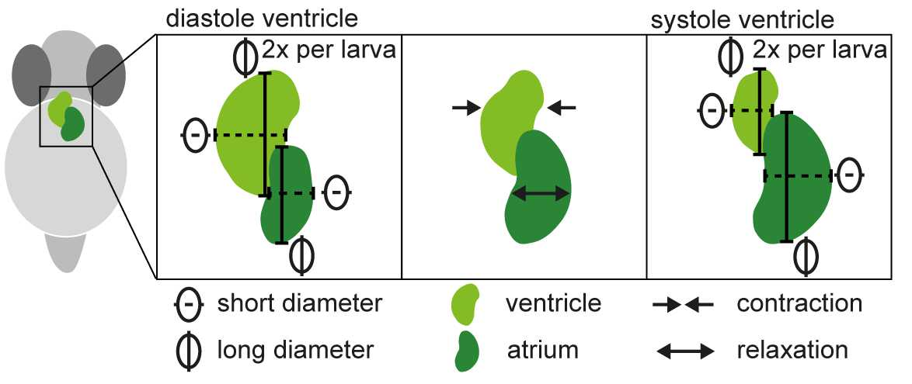

This is a Jupyter notebook with a tool to extract the heart sections from the whole slides automatically.
This is an ImageJ macro to isolate a 3D structure from a Z-stack.

Here we have the workflow for analysis of the heart beat of timeseries taken at the Nikon fluorescent stereoscope. It includes an ImageJ python tool and a jupyter notebook for analysis.